Last Week’s Work Review#
We decided our concrete next steps to do.
You need password to access to the content, go to Slack *#phdsukai to find more.
Part of this article is encrypted with password:
[TOC]
Last Week’s Work Review (in detail)#
We decide that our concrete step to do are:
- get a auto alignment module that can align the trajectories and walkthroughs
- refine the Goyal’s Language Reward Network by using this alignment module
- let the alignment module to generate descriptions for human playing trajectories and then check if we can use Hindsight Experience Relabelling to let agent learn from not-so-good trajectories.
TODO List#
- ask Goyal’s team to get annotation dataset.
- walkthrough trajectory alignment
- find text video alignment paper
Goyal’s annotation dataset#
3 second clip, (150 frames), 6870 number of annotations in total.
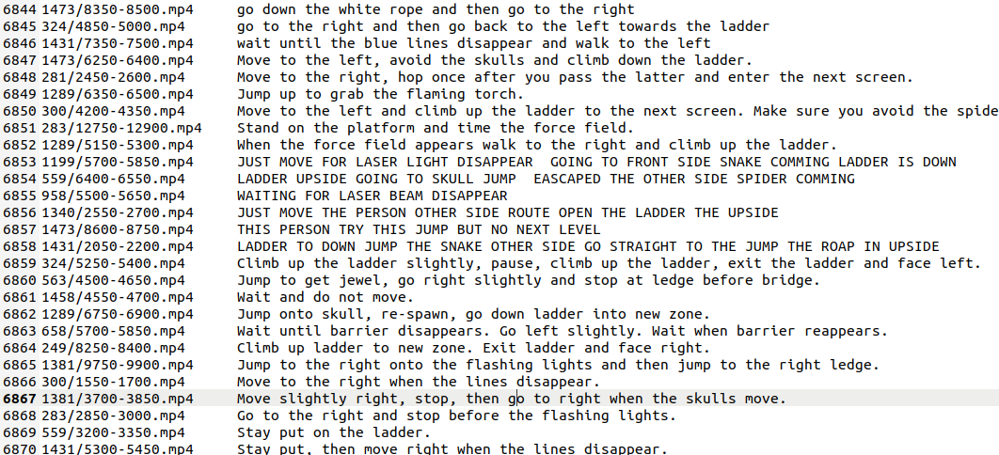
these are step-by-step trajectory-instruction pairs
Trevor’s comments#
- can we consider goal based learning where the goals are expressed in natural language, and need to first be “understood” by the agent? This is separate to the question of HER etc. The thing is just that we have a range of training settings where the agent is given one of a range of possible goals, and the associated reward is based on whether that goal is achieved.
- extending to HER: can we take failed episodes from the above, and then characterise a goal that the agent did make some progress towards (perhaps not all episodes)? Maybe this is easier to envisage with novice off-policy training episodes, as we would expect human players to achieve some progress.
I guess the above could also be evaluated without natural language, just with purely symbolic representations of goals. That is, given some goal id, or an (x,y) coordinate. On this, when reading the HER paper I wasn’t sure what format the goal took when used as input to the policy, was it an (x,y) coordinate of the target for the block. – Trevor 5:58 pm Jun 6, 2022 in Slack channel
For point 1, “grounded language learning” is exactly about training agents to understand language instructions by interacting with the environment. There is a research environment named “ALFRED” https://arxiv.org/pdf/1912.01734.pdf that can randomly generate complex 3D rooms for agents to explore. The dataset ALFRED includes 25,743 English language directives describing 8,055 expert demonstrations averaging 50 steps each, resulting in 428,322 image-action pairs. We can check this website for more info https://askforalfred.com/
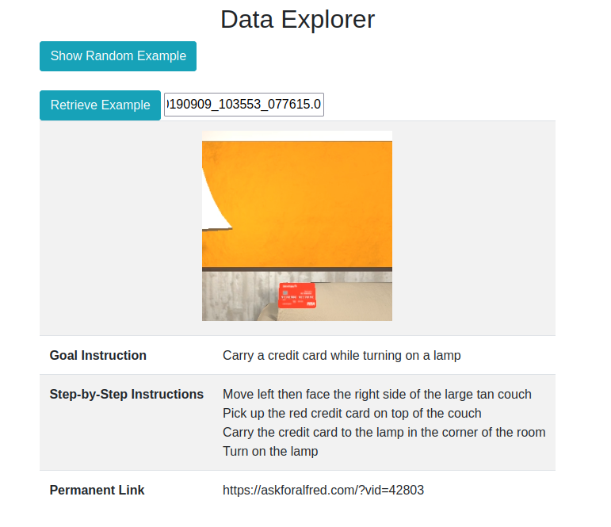
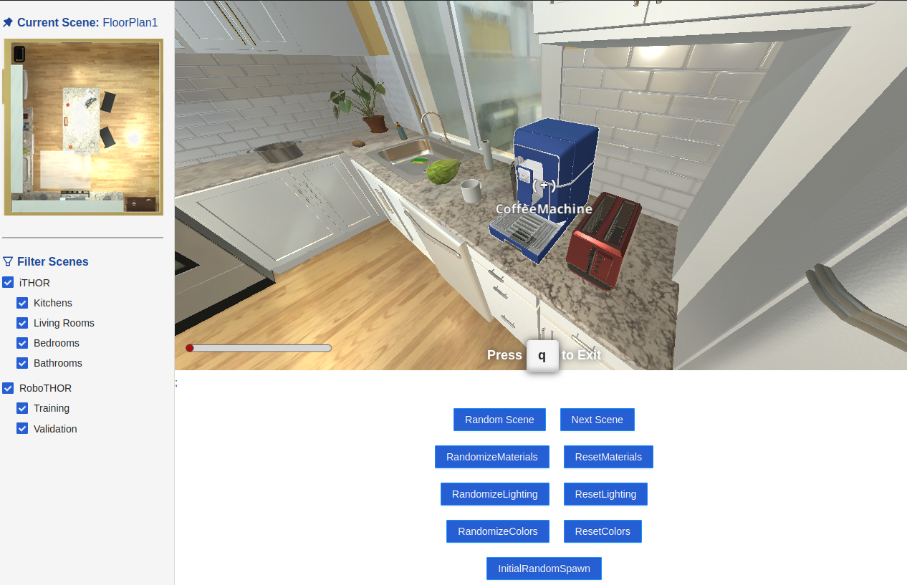
I expect that an agent that can understand natural language instructions may apply its knowledge to different environments. Later we can try if a Montezuma’s Revenge agent that understand Montezuma’s Revenge walkthrough can easily adapt to other environment such as “ALFRED”.
For point 2, first I want to say that HER can apply to both high level and low level natural language settings.
See the following screenshot.
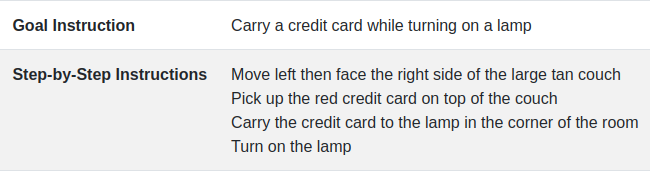
If our goal is described as “step by step instructions”, then we can use HER to relabel failed episodes. and the new goal is just the step-by-step descriptions of the failed episodes. In this way, we can consider that the agent was following the (new) goal and thus provide them with positive rewards.
If the goal is written at high level, we need to summarise what the agent did and then replace the old goal to the summary of the agent’s behaviour.
- The issue is that in some environment such as “ALFRED”, there are no literally toxic behaviours. While in Montezuma’s Revenge, there are behaviours that should be always avoided. (e.g. falling a large distance, colliding with snakes etc.). The questions now become how can we learn from totally toxic behaviours.
I am quite optimistic about this because I do believe that eventually once the agent is able to learn the compositionality in natural language, the agent can still utilise the toxic trajectory.
e.g., we have this trajectory about “agent jump into with a snake and died”. This toxic behaviour is useful because
- it recognises the snake
- it also recognises the action “jump into”
As long as the agent has the knowledge to know the difference between “jump into” and “jump over”, then it can learn from this toxic trajectory and know how to “jump over the snake”.
In HER paper, I think the format of the goal is indeed the (x,y) coordinate, and then it is concatenated with the observation vector and feed into the policy network.
Nir’s comments#
Some comments about the discussion:
- The relabeling in HER is not a step-by-step instruction, but a change of the goal state, which only changes the reward of the last (state, action) pair associated to the episode. This is so because they define the reward to be 0 if a state is a goal state, -1 otherwise.
- The toxic trajectories would definitely help, as learning from negative examples also provide useful information, specially in problems that represent directed graphs (you can’t undo certain effects). This could be incorporated easily by devising an appropriate general reward function, e.g. large penalty associated with key state,action pairs. A simple example to think about this is the toy problem in RL, a grid, a shortest path which is dangerous (see image) as action right has 25% of going down instead. If the -100 rewards doesn’t exist, i.e. it’s -1 and traps the agent until the end of the episode, and instead you state “going close to the cliff is dangerous as a strong gust of wind can kill you”, what would be a correct general negative reward function? You can certainly start simple and just give a large penalty for the last state,action pair, or you could associate the penalty with all the state,action pairs that places the agent “close to the cliff”. Is this the contribution you want to make: How to learn from negative/positive instructions given in language?
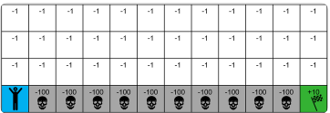
- The main idea of HER is that it learns from all episodes, specially the ones it failed as it just changes the reward function to make the episode successful for another goal, which hopefully helps learning something useful for the original goal. Can we take this insight when it’s not easy to characterize alternative goals for failed episodes? Can we use natural language instructions to induce a reward function? the paper of Goyal suggests one way to define such reward functions, they used it to define a “reward potential” for simple tasks. Is there any way to integrate both HER and inspired by Goyal’s method, redefine the reward function of failed episodes given the instructions? Another important information contained in the instructions is the “sequentiality” of the goals, and this can also be used to do the relabelling (defining a reward function for failed episodes). I say this because HER was tested over continuous or non-combinatorial domains. Montezuma requires reasoning about the sequence of goals.
- The area of goal recognition (GR) is also relevant for the problem at hand: Given an observation and a set of candidate goals, which is the goal that explains best the observed behaviour? We can use inference techniques used in GR and recast the problem as finding the instruction that explains best the observed behaviour. Once the closest instruction is found, what can we do? The idea would be to define the reward function associated with the observed trajectory using the closest instruction. This also reminds me to the are of Inverse reinforcement learning, where given a set of “rational/optimal” trajectories, the task is to infer which reward function was used. Again in this case, a set of instructions may help to infer a reward function.
For point 1, I agree that in HER settings, the agent will only receive positive rewards at the goal state as it is a sparse reward environment. However, step-by-step instructions and HER are not mutually exclusive in my opinion. What we can do is that only give the agent rewards once it complete all the required actions (so in each state we have something like the boolean satisfiability check (SAT) along the way).
For point 2 and 3, it looks like point 2 is discussing how to utilise toxic trajectories without using HER. Let me rephrase your idea so that we can see if I understand it correctly. In this setting we want to give agents additional negative reward signal when it “going close to the cliff”. To do so we need to have
- a module that can describe the current observations (something like image captioning model that can describe the current scene)
- an reward shaping module that provides additional reward signal based on the walkthrough info
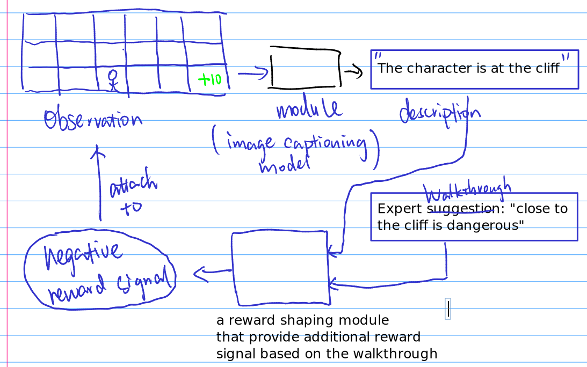
I would say this is an extension to the Goyal’s work. In this setting we have to train the agent in two steps like Goyal’s work.
- First, we need to train a video-text alignment/generation module that can describe the scenario and also train the reward shaping module.
- After that, we start to train the policy network just like what Goyal did.
This is a totally reward shaping method to deal with the toxic trajectories, nothing to do with HER
But in my imagination, HER can be directly utilised for toxic trajectories and this would only need one step to do the whole thing. (in the settings where the goal is presented as natural language)
- in HER settings, for toxic trajectories, we change our goal directly to toxic behaviour of the agent
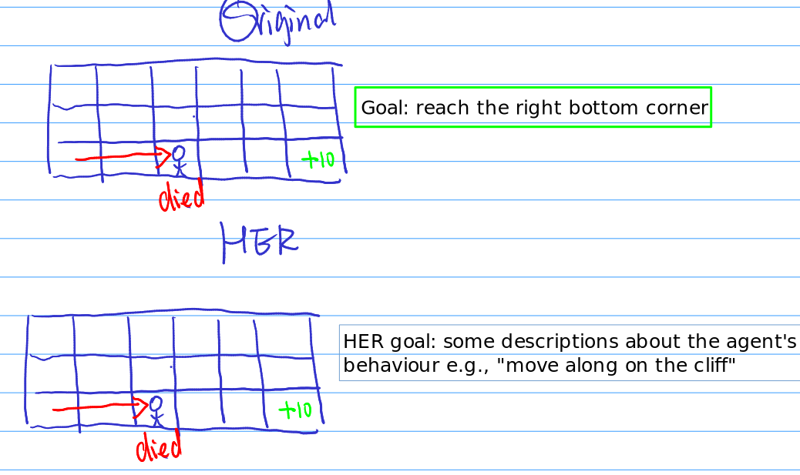
- therefore, we will provide agent with additional positive rewards under this sparse rewards setting.
- In HER, the policy network’s input are the combination of observation and goal representation. so in testing phase, we provide the agent with correct walkthrough
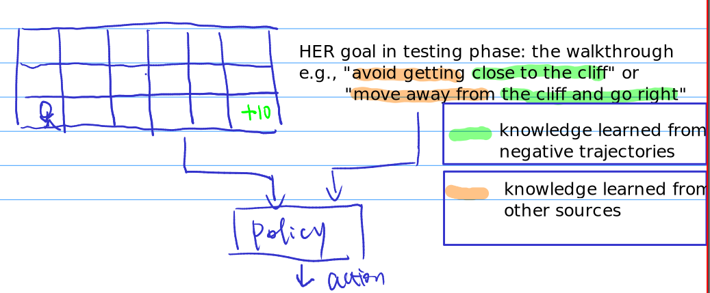
- I assume that the agent will learn concepts about “cliff”, “close to” from toxic trajectories. And during testing phase, what it needs is that they also learn the concept of “avoid” or “move away from” (the negation concept) from other sources and thus it can output desirable actions
- this assumption is based on that agent is able to extract each individual concepts from whole scenario.
So above is something different from Goyal’s reward shaping work.
For point 4 goal recognition (GR), it looks similar to the generation of walkthrough from the starting scene.
for instance, given a starting scene in Montezuma’s Revenge.
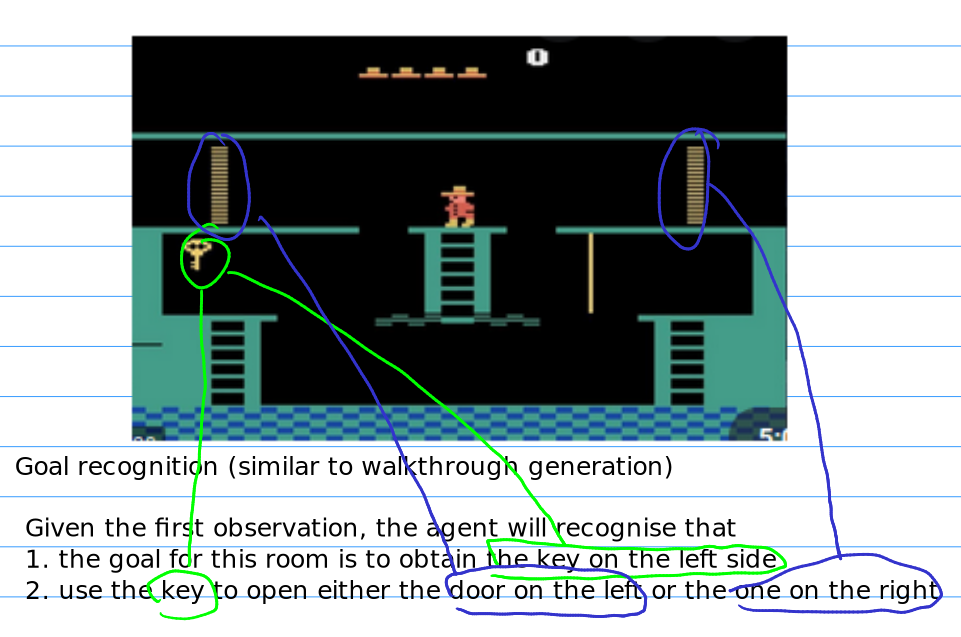
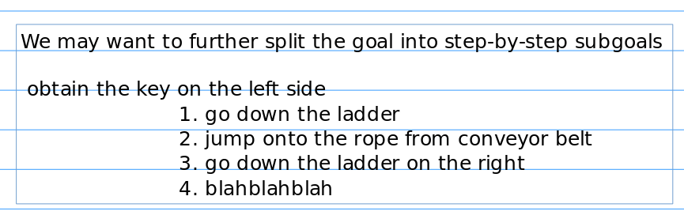
For sure we can test if we can train a goal recognition model this using the annotation dataset, but I think this is more difficult than training a game playing agent, because “teacher” model is more intelligent than “student” model
Text video alignment paper#
1. Bull, Hannah, et al. “Aligning subtitles in sign language videos.” Proceedings of the IEEE/CVF International Conference on Computer Vision. 2021.#
Research problem
The authors studied the task of aligning subtitles to continuous signing in sign language interpreted TV broadcast data. The subtitles usually correspond to and are aligned with the audio content but are unaligned with the accompanying signing.
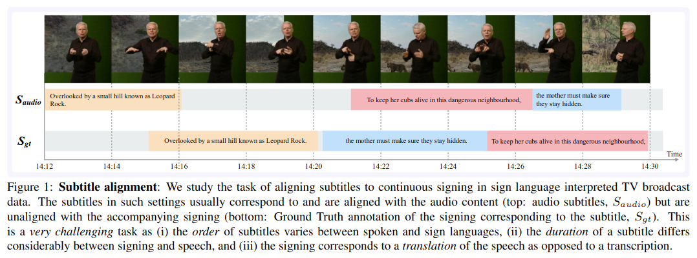
Their solution
We propose a Transformer architecture tailored for this task, which we train on manually annotated alignments covering over 15K subtitles that span 17.7 hours of video. We use BERT subtitle embeddings and CNN video representations learned for sign recognition to encode the two signals, which interact through a series of attention layers. Our model outputs frame-level predictions, i.e., for each video frame, whether it belongs to the queried subtitle or not. Through extensive evaluations, we show substantial improvements over existing alignment baselines that do not make use of subtitle text embeddings for learning
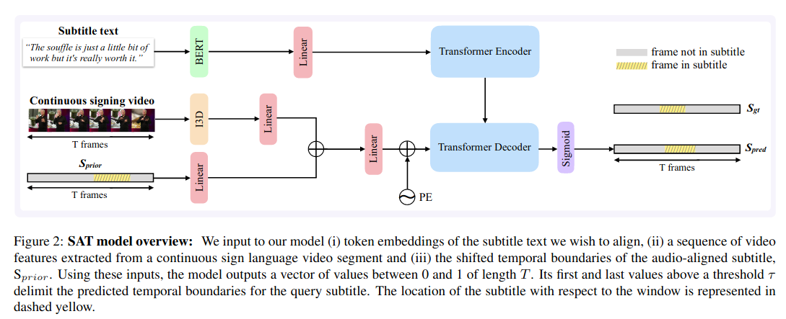
Takeaways from this model
- this a cross attention model that uses transformer architecture.
- the output format is the frame-level prediction about whether the current frame belongs to the queried subtitle.
2. Zhao, Yang, et al. “Cascaded prediction network via segment tree for temporal video grounding.” Proceedings of the IEEE/CVF Conference on Computer Vision and Pattern Recognition. 2021.#
Research problem
Temporal video grounding aims to localize the target segment which is semantically aligned with the given sentence in an untrimmed video.
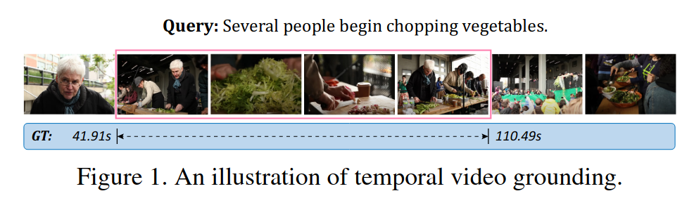
Their solution
propose a novel Cascaded Prediction Network (CPN) to generate the grounding result in a coarse-to-fine manner. Concretely, we first encode video and query into the same latent space and fuse them into integrated representations. Afterwards, we construct a segment-tree-based structure and make predictions via decision navigation and signal decomposition in a cascaded way.
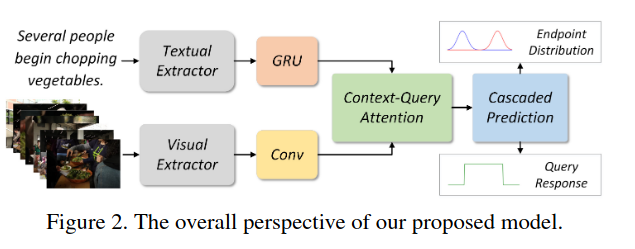
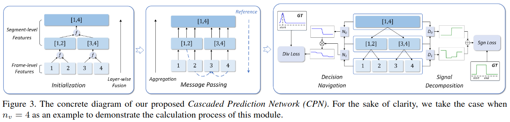
The decision navigation side decide the endpoint distribution while the signal decomposition side decide the query response distribution.
Takeaways from this model
- in addition to context-query attention module, they proposed a tree structure to generate the grounding result in a coarse-to-fine manner.
- this cascaded model is more complex than vanilla transformer architecture
3. Zhang, Chuhan, Ankush Gupta, and Andrew Zisserman. “Temporal query networks for fine-grained video understanding.” Proceedings of the IEEE/CVF Conference on Computer Vision and Pattern Recognition. 2021.#
Research problem
Our objective in this work is fine-grained classification of actions in untrimmed videos, where the actions may be temporally extended or may span only a few frames of the video. We cast this into a query-response mechanism, where each query addresses a particular question, and has its own response label set.
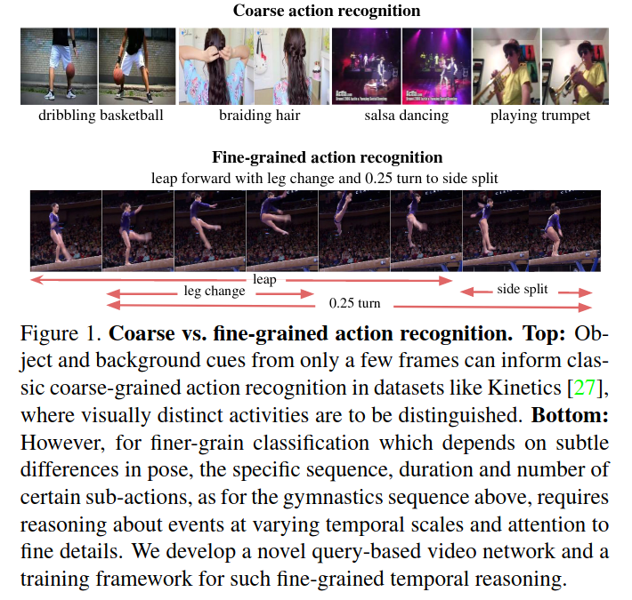
Their solution
(i) We propose a new model—a Temporal Query Network—which enables the query-response functionality, and a structural understanding of fine-grained actions. It attends to relevant segments for each query with a temporal attention mechanism, and can be trained using only the labels for each query.
(ii) We propose a new way—stochastic feature bank update—to train a network on videos of various lengths with the dense sampling required to respond to fine-grained queries.
The Temporal Query Network (TQN) decoder, which given only weak supervision (no event location/duration), learns to respond to the queries by attending over the entire densely sampled untrimmed video. This would only tell if the video is related to a query or not.
The query contains the hierarchical information
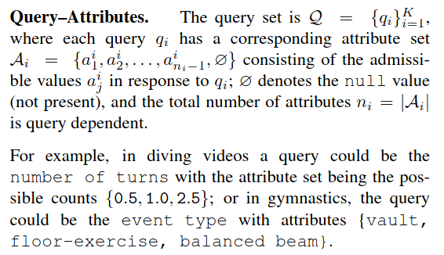
The author realise that in such a way, the TQN decoder learns to establish temporal correspondence between the query vectors and relevant visual features as we can obtain this temporal correspondence from the attention coefficient
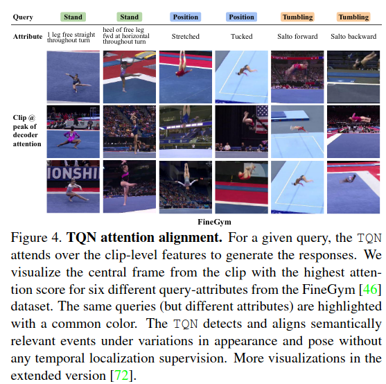
Takeaways from this model
- this model is able to obtain fine-grained action recognition from attention coefficients from transformer. Therefore the target label can be other format other than the temporal endpoints of the events.
4. Li, Bairong, et al. “Learning frame-level affinity with video-level labels for weakly supervised temporal action detection.” Neurocomputing 463 (2021): 109-121.#
Abstract
To alleviate the demand for frame-level annotations, Weakly Supervised Temporal Action Detection (WS-TAD) methods have been studied. With only video class labels, most works in this line of research train a classification network for classifying untrimmed videos, and then selecting frames most contributing for correctly classifying videos (i.e., frames with high responses) as action instances.
… There are semantic relations between frames, i.e., two frames of the same action class are semantically affinitive. In this paper, to resolve the above-mentioned issue, we propose to exploit this semantic affinity between frames as additional information for obtaining more accurate detection results.
Their architecture
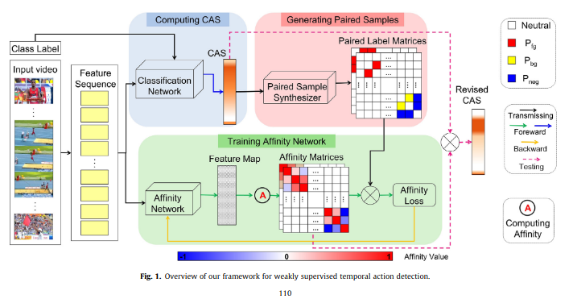
Takeaways
- looks like their architecture is over-complicated
5. Wang, Jianan, et al. “Data-efficient Alignment of Multimodal Sequences by Aligning Gradient Updates and Internal Feature Distributions.” Proceedings of the IEEE/CVF Winter Conference on Applications of Computer Vision. 2021.#
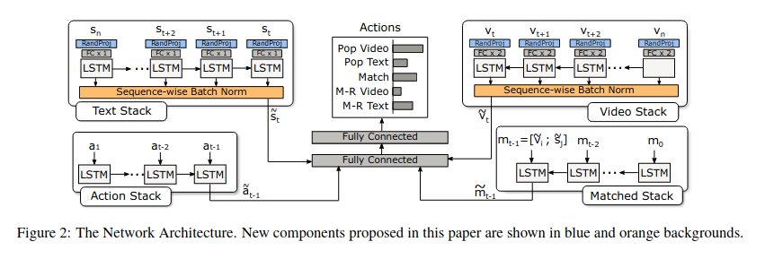
6. Song, Young Chol, et al. “Unsupervised Alignment of Actions in Video with Text Descriptions.” IJCAI. 2016.#
Abstract
Recently, several models have been shown to be effective for unsupervised alignment of objects in video with language. However, it remains difficult to generate good spatio-temporal video segments for actions that align well with language. This paper presents a framework that extracts higher level representations of low-level action features through hyperfeature coding from video and aligns them with language. We propose a two-step process that creates a high-level action feature codebook with temporally consistent motions, and then applies an unsupervised alignment algorithm over the action codewords and verbs in the language to identify individual activities.
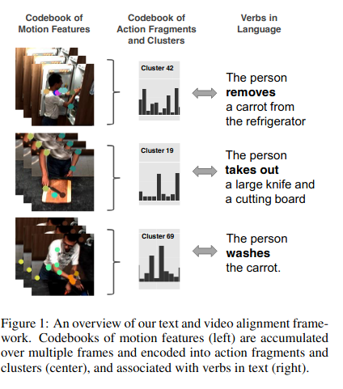
Summary of the papers#
- The text video alignment model is also a multi-modal module. We can use SOTA multi-modal architecture for alignment task
- It is important to design the output format for supervised learning.
- some are using binary frame wise predictions predicting if the frame is related to the query text.
- some are using multi-class labels and then the temporal information is obtained from attention coefficients from Transformer architecture.